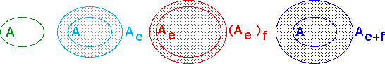

| Here we prove the Lemma |
|  |
| Take any point x in (Ae)f.
Then there is a point y in Ae
with |
| Now because y belongs to Ae,
there is a point z in A with
|
| Then by the triangle inequality for Euclidean distance, |
| d(x,z) ≤ d(x,y) + d(y,z) ≤ e + f. |
| That is, for any point x in (Ae)f,
there is a point z in A with
|
| This shows |
Return to Triangle inequality.